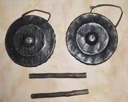
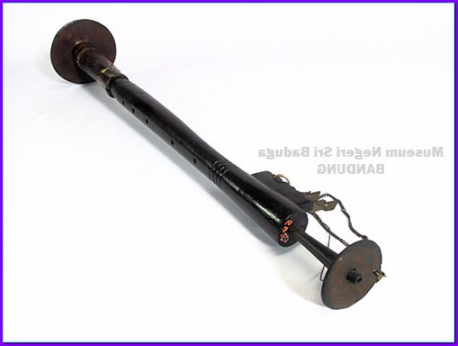
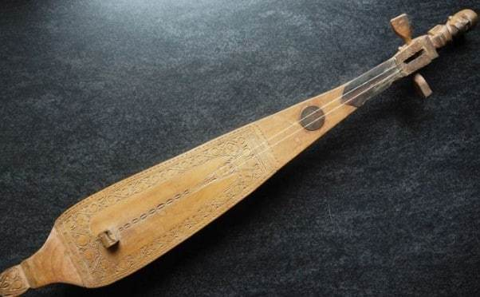
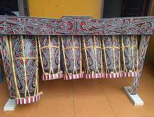
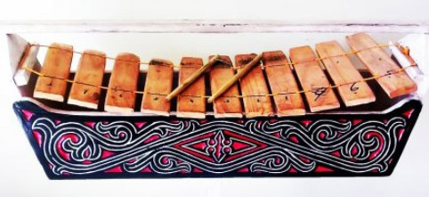

Informasi
Musik punya manfaat sebagai sarana menunjukkan kebudayaan (identitas) suatu masyarakat. Di Sumatera
Utara
(Sumut), provinsi di bagian barat Indonesia terdiri dari berbagai suku dan budaya berbeda, punya
banyak
alat
musik tradisional. Alat musik tersebut sudah sangat tua dan digunakan oleh masyarakat secara turun
temurun.
Apa saja sih alat musik tradisional Sumut yang masih lestari hingga sekarang. Berikut kumpulkan lima
alat
musik tradisional batak toba dari berbagai sumber.
5 Alat Musik Tradisional Batak Toba
1. Pangora

Pangora ialah alat musik sejenis gong Jawa dengan bentuk yang relatif sama. Bedanya, alat musik
pangora
ini
berbunyi “pok”. Apa yang menyebabkan begitu? Hal ini disebabkan karena alat musik Pangora ini
dipukul
dengan
menggunakan stik dan bagian pinggiran pangora diredam dengan pegangan tangan.
Ukuran alat musik Pangora yang paling besar dengan diameter sekitar 37 cm dan ketebalan sekitar 6
cm.
Pangora
ini dimainkan dengan cara dipukul seperti Gong.
2. Sarune Bolon

Sarune Bolon adalah alat musik traidisional asal Tapanuli yang terbuat dari kayu, tanduk kerbau
dan
kayu
arung sebagai "ipit-ipit" atau sumber suara. Sarune Bolon dimainkan dengan cara ditiup. Alat
musik
ini
berfungsi sebagai pembawa melodi dan lagu dalam Gondang Batak.
3. Hapetan

Alat musik tradisional Hapetan ini mirip dengan alat musik kecapi, yaitu berdawai dan dimainkan
dengan
cara
dipetik. Hapetan juga disebut Hasapi atau Kucapi.
4. Taganing

Alat musik ini berfungsi sebagai pembawa melodi yang sifatnya lebih ritmis meningkahi (menjahit)
permainan
dari Sarune (melodi utama) pada ensambel gondang sabangun. Alat musik ini dimainkan oleh satu
atau
dua
orang
dengan cara dipukul dengan menggunakan palupalu (stik).
5. Garantung

Garantung adalah salah satu alat musik Batak Toba, yang merupakan pembawa melodi. Alat musik ini
terbuat
dari
kayu ingol dan dosi serta memiliki lima bilah nada. Ada hal yang unik mengenai nama alat musik
ini,
karena
ternyata di Kalimantan Tengah, Garantung juga merupakan nama alat musik tradisional. Namun
bedanya,
di
Toba
Garantung adalah alat musik pukul yang terbuat dari kayu, sementara di Kalimantan Tengah
Garantung
merupakan
alat musik tradisional sejenis gong.